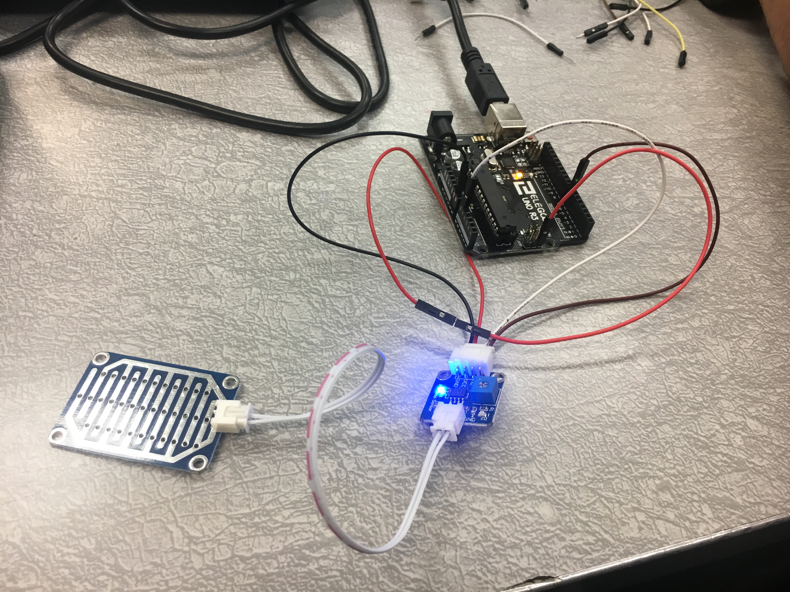

Here you can find a portfolio of the projects that I created during the PLTW training.
| First Project | My first project was to make create this website from html. | |
|---|---|---|
| Second Project | For my second project, I created a project in the online program Scratch. My partner and I made a visual video to represent the story in the Pearl Jam song, "Last Kiss." The song is a trageic love song. | |
| Third Project |

|
For my third project, my partner and I created an android application (an App), and our App was a game of Tic-Tac-Toe. We used the online program App Inventor for this project. This was a very challening task for us and our final product still have some glitches. However, we had internet issues that made programming and checking it very difficult. |
| Fourth Project |

|
My fourth project was to make create an interactive fiction story (aka choose-your-own-adventure story) using Python. This was our first interaction with Python and it was a great project for getting started. Check out my Computer Science Principals teacher's project, it is really good! |
| Fifth Project | My fifth project was to make create a game in python. I made a word scramble game that provides the user with a word but the letters are mixed up and they guess the original word. I made a loop in the code so that the user can guess multiple times and my program tracks the number of guesses. I spent a lot of time creating the code and I learned a lot! | |
| Sixth Project | My sixth project was to use Python to alter photos that we uploaded to the program. We did four changed to the image in the code we: (1) stretched the image, (2) rotated the image 36 degrees counterclockwise, and (3) we selected three rectangles in the new image and changed the coloring in those rectangles. | |
| Seventh Project |

|
My seventh project was to use Python to examine large data sets. My group found a set of data about fatalities from auto accidents from the Federal Highway Administration. We created a cvs file from an excel document with "Highway Fatalities per million" and "Fatalities rates per Registred Motor Vehicle." Then we created a program in Python that found the data from the set and created a data display. Unfortunately, we picked data that was not good to compare but we didn't discover this until the end of our project. |
| Eighth Project | My eighth project was to use Netlogo to remix an exisiting simulation code. Netlogo is a program that runs simulations, a simulation is a model that generates meaningful but ficitional data. My partner and I changed a visual simulation that had turtles rotating in a circle. We changed the turtles to airplanes by using the button code. We changed the circles of airplanes to rotate left (lt) instead of rotating right (rt). We also made the background of the simulation blue, to make it look like a sky. Lastly we increased the size of the airplanes. | |
| Ninth Project |  | My last PLTW project was my ninth project and we used Arduino, a new program for us. Arduino devices are a combination of hardware and software devices. So my partner and I started by learning about circuit boards and hardware. Then we created an Arduino project that is a rain sensor. We uploaded existing code to our Arduino breadboard and then attached it to a rain sensor so that it detects water on the sensor and lights up as a result. This was a simple project but it could be part of a larger device that senses water and then does something as result, such as shutting down a sprinkler system when it rains. |
This is an excellent resource for anyone interested in getting started with Computer Science.